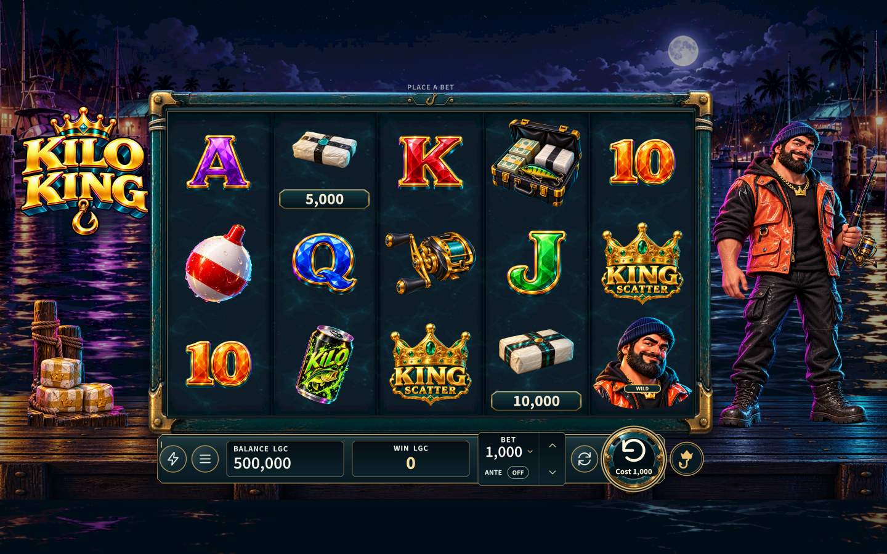
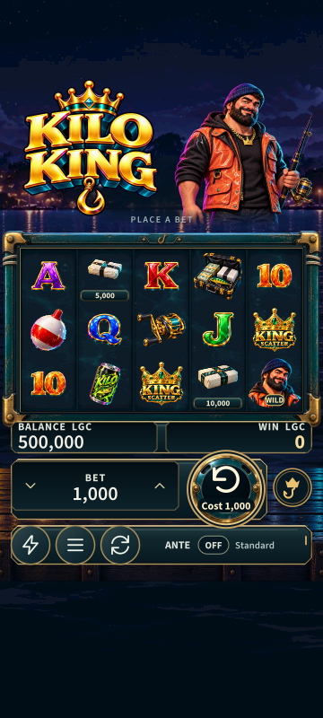
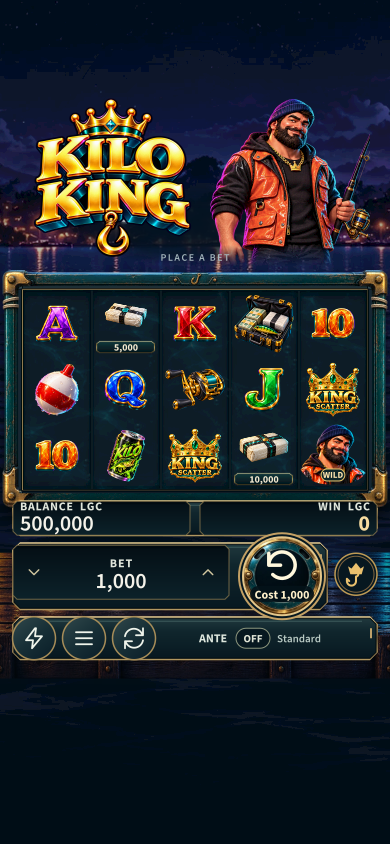
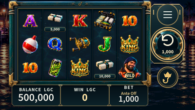

Six actual-size authored design frames from one source. These are not browser screenshots. The interaction/state matrix and active resize remain unverified.
desktop-1440x900
phone-small-360x800
phone-390x844
landscape-844x390popout-400x225
popout-medium-480x270